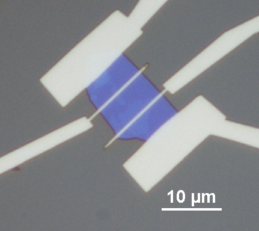
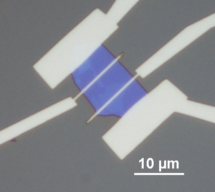

Code
Some possibly useful snippets of code that I've developed and accumulated over the years
Shell/Bash Scripts
Script mkis a bash script that can be used to run and re-run thepdflatexcommand and thebibtex. Place file in desired path (preferably with the.texfile) and then use./mkto run the script.Download: mkScript cleanis a bash script that can used to clean out the contents of a directory or directories. Works similar to the commandmake clean, but is currently configured for use with LaTeX files and removes the*.log,*.bbl, *.out,etc... files, useful when using a repository to save space. Place in desired top directory and then use./cleanto run the scriptDownload: cleanPython
Some code add more... 4probe_analysis.py Fortran
C++
LaTeX